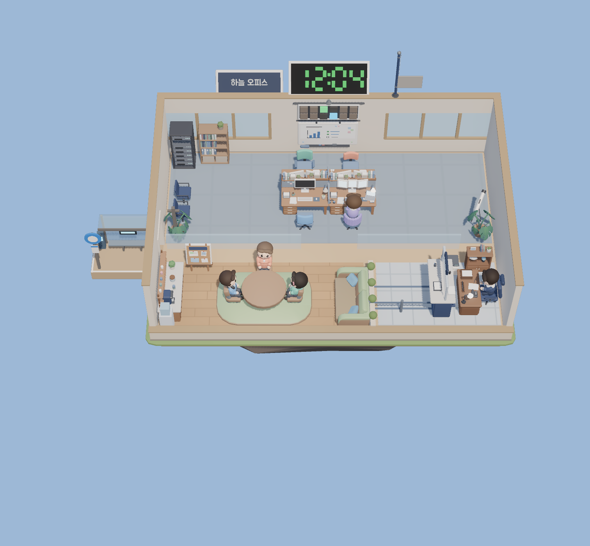
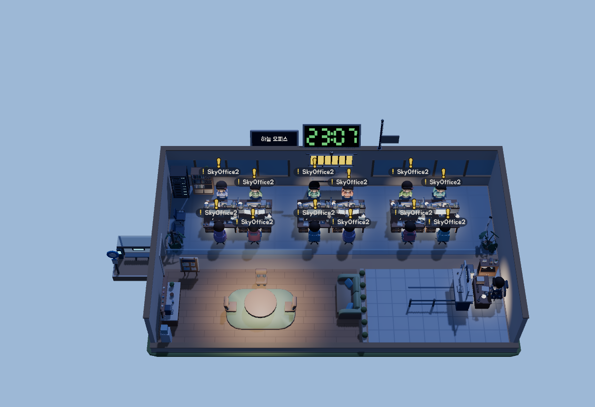
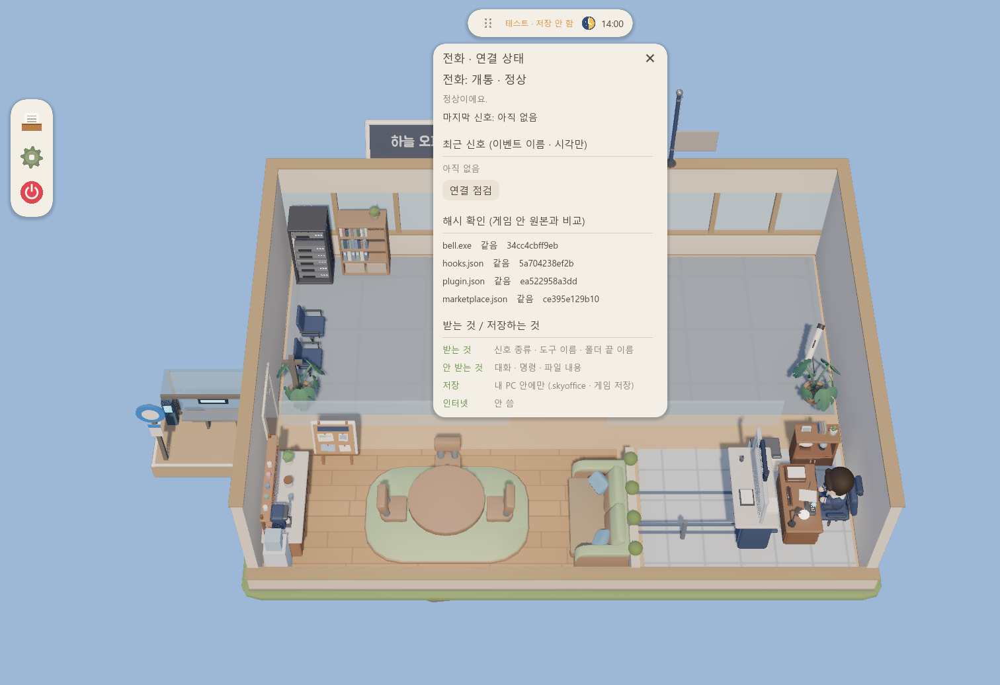

하늘에 뜬
내 AI 사무실
Claude Code 세션 하나가 직원 한 명이에요. 허락이나 질문이 오면 직원 머리 위에 노란 느낌표가 떠요. 그림의 느낌표를 눌러 보세요.
Windows 11 x64, MIT 라이선스, 무료. 서명 파일(.sig)도 함께 올라와 있어요.
Claude Code와 함께 쓰는 팬 게임이에요. Anthropic과 제휴하거나 보증받은 관계가 아니에요. 정식 지원은 Claude Code이고, Codex와 Antigravity는 관찰 모드예요 (Codex는 선택 훅).

PM이 물어봐요
src/app.py 파일을 고쳐도 될까요?

낮과 밤, 점심, 성장
터미널을 계속 들여다보지 않아도 돼요. 섬을 흘끗 보면 누가 일하고 누가 나를 부르는지 보여요.
허락이나 질문이 오면 직원 머리 위에 노란 느낌표와 명패가 떠요. 노랑은 오직 내 차례예요.
사무실 게시판
나는 사장, 직원은 AI 에이전트예요.
일하는 모습
일을 시키면 직원이 책상에서 일하고, 끝나면 기지개를 켜고 쉬어요.
서브에이전트가 끝나면 봉투가 날아와요. 명패에 마우스를 올리면 직무와 하는 일 한 줄 (PM · 고치는 중), 부를 때는 작업 폴더가 보여요.
책상 직원은 PM, 일하는 서브에이전트는 전문가 손님이에요. 역할 이름은 .claude/agents/*.md 지침서 이름 그대로예요. 게임은 지침서를 읽지 않고 이름만 받아요.
같은 도구를 3번 연속 쓰면 책장, 서버 랙, 망원경, 화이트보드 앞으로 가요. 조용히 모드에서는 꺼져요.
회사 생활
낮에서 밤으로 바뀌어요. 합성 환경음, 조용히 모드, 자동 업데이트가 있어요.
책장 읽기와 화이트보드 낙서를 해요. 명패 아래에 모델 이름 칩이 붙어요.
침대, 밥그릇, 잠, 산책, 쓰다듬기.
직원 카드의 [프로젝트 완료]로 단골을 풀면 사장실 명예의 벽에 기념 액자가 걸려요 (날짜, 기간, 겉모습). 프로젝트 이름은 저장하지 않아요. 연혁 액자도 있어요.
회사 성장
창업, 스타트업, 중소기업, 유니콘, 중견기업, 대기업. 단계 28, 54, 90, 140에서 다음에 켤 때 사무실이 커져요 (책상 6 → 8 → 10 → 12). 책상이 모자라면 단골 직원이 지원 근무를 해요.
탕비 코너 (냉온수기, 캡슐 커피), 카펫, 화분, 유리 간판, 복지 가구 (빈백, TV, 간식 냉장고), 라운지와 카페 코너, 유리 사장실, 서버 랙 3대, 복합기, 모니터 2대, 에스프레소 머신, 유리 진열장, 대형 간판, 전문가석, 사장 진열장 트로피.
다른 도구
파일 수정 시각만 보고 직원이 일하는 모습을 보여 줘요. Codex는 전화 패널의 Codex 연결 칸에서 선택으로 훅을 연결할 수 있어요. 게임이 설정 파일을 직접 고치지 않고 복사 안내만 해요.
선택 기능, 기본 꺼짐: 게임에서 Claude 부르기
설정 > 회사 탭에서 켜면 사장 책상 전화 패널에서 직원 있는 프로젝트 하나에 한 줄을 보낼 수 있어요.
게임이 내 PC의 claude.exe를 한 번 실행해요. 토큰이 쓰여요. 보낼 때마다 확인 카드가 뜨고, 그 폴더 파일을 읽기만 해요 (최대 5턴, $0.50, 120초). 명령과 답은 저장하지 않아요.
설치, 연결, 제거
연결은 선택이에요. 약 1분이면 돼요. 개통 전에는 관찰 모드로 동작해요. 관찰 모드는 Claude Code 기록 파일의 수정 시각만 봐요.
| 전화기 | 뜻 |
|---|---|
| 회색 불 | 미개통 (관찰 모드) |
| 하늘색 불 | 개통, 정상 |
| 수화기 내려감 + X | 불통. 전화기를 누르면 원인 1줄 |
- 받기릴리스
SkyOffice-버전-windows-x64.zip을 받고 모두 압축 풀기를 해요. - 켜기SkyOffice.exe
두 번 클릭하고 회사 이름을 정해요.
- 연결 (선택)전화기 → [개통하기]
claude 명령을 못 찾았어요가 뜨면 [명령 복사]를 누르고, Claude Code를 쓰는 PowerShell에 붙여 넣고 Enter를 눌러요 (2줄). 열려 있던 Claude Code는 껐다 다시 켜요. - 확인아무 일이나 시키기
Claude Code에서 일을 시키면 직원이 움직여요.
- 제거설정 → 회사 → 폐업 정리
플러그인, 저장, 자동 실행을 지워요. 게임 폴더는 직접 지워요.
하늘색 불이 들어오면 끝이에요

개인정보와 안전
게임에는 승인 버튼이 없어요. 허락은 늘 터미널에서 해요.
| 받는 것 | 신호 종류, 도구 이름, 폴더 끝 이름, 모델 이름 (Codex 훅) |
|---|---|
| 안 받는 것 | 프롬프트, 명령, 파일 내용, 대화, 오류 문장, 환경 변수 |
| 저장 | 내 PC 안에만 (%USERPROFILE%\.skyoffice, %APPDATA%\SkyOffice) |
| 인터넷 | 안 써요 (게임은 업데이트 확인만) |
훅 12개는 모두 출력 없음, 결정 권한 없음이에요. 켤 때마다 설치 파일 4개의 SHA-256을 게임 안 원본과 비교해요. 다르면 불통이 되고 신호 처리를 멈춰요. 소스와 해시는 README에 있어요.
직접 개통과 제거 (PowerShell)
claude plugin marketplace add "$env:USERPROFILE\.skyoffice\plugin\0.2.0"
claude plugin install skyoffice-bell@skyoffice --scope user
claude plugin uninstall skyoffice-bell@skyoffice
claude plugin marketplace remove skyoffice문제 해결
개통했는데 불이 안 들어와요? Claude Code를 다시 켜고 일을 하나 시켜요.
불통 “신호가 안 와요”가 떠요? Claude Code를 다시 켜고 전화기의 [연결 점검]을 눌러요.
불통 “파일이 바뀌었어요”가 떠요? 전화기의 [개통하기]로 다시 개통해요.
그래도 안 되나요? Issues에 알려 주세요.
다음 버전
목표. 캐릭터 새 모델 (뜨개 질감), 새 배경음악.
연출. 망원경 연출, 부두 벤치, 창밖 연출.
검토 중 (미정). Gemini/Antigravity 훅 연동, 게임 안 명령 쓰기 권한.